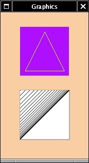
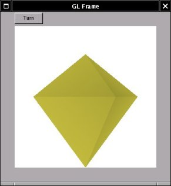

| LAST: Programming Details 1 | Contents | NEXT: Programming Details 3 |
The WINGs library has functions to directly draw an image in a label, button or slider. To write to other widgets, there is a function WMDrawPixmap (WMPixmap *pixmap, Drawable d, int x, int y). The pixmap can be written to any XLib variable of type Drawable, at position (x,y). This section shows how it is done to a window. The drawable is retrieved from the widget's view structure by the macro W_VIEW_DRAWABLE(WMView). You only call this macro after the widget has been WMRealizeWidgeted, or there simply will not be a drawable in it. To use it,#include <WINGs/WINGsP.h>.
Images can be created from within the code itself. The WINGs/wraster library creates a structure for it, by the call RCreateImage, and there are a few functions to draw a line or segments in it. You would only use this if you like to store the image in memory for some reason. These functions use a colour structure RColor. There is a conversion function from a WMColor, but the RColor is a simple structure with four unsigned long members which are the RGB and alpha values. This example shows how a picture is drawn directly into a window, by the defined function drawProcedure. This function is called by associating Expose events to it, by using WMCreateEventHandler on the window's view:
void drawProcedure(XEvent *event, void *data){
WMDrawPixmap(pixmap, W_VIEW_DRAWABLE(WMWidgetView(data)),30,30);XFlush(display);
}
int main (){
/* code */
WMCreateEventHandler(WMWidgetView(win), ExposureMask,drawProcedure,win);
/* */ }
Try to comment out the line with the event handler function, and to call WMDrawPixmap(pixmap, W_VIEW_DRAWABLE directly from main. It won't work. When the WMScreenMainLoop starts up, there will be an Expose event. The window will react to the event by drawing itself, as specified in the WINGslib routines, but there won't be another call to WMDrawPixmap, unless you programme it yourself.
The Xlib library itself offers more possibilities to draw in a widget, like drawing curves. The Xlib functions write to the drawable, like WMDrawPixmap. Xlib functions need the Xlib GC type graphics contexts. You keep different graphics contexts at a time to switch drawing styles. The WMColorGC macro creates one from a WMColor structure, which will give you the color you used as an argument. In the example, the line width in this graphics context is set to 3 instead of one with the function XSetLineAttributes. You'll get this line width whenever you use XMColorGC(screen->gray) from that point on. The next lines are drawn with default line width. The example is here.
Useful Xlib functions and structures are
int XDrawRectangle(Display *display, Drawable d, GC gc,
int x, int y, unsigned int width, unsigned int
height)
int XDrawLines(Display *display, Drawable d, GC gc, XPoint
*points, int npoints, int mode)
int XDrawSegments(Display *display, Drawable d, GC gc,
XSegment *segments, int nsegments)
int XDrawArc(Display *display, Drawable d, GC gc, int x,
int y, unsigned int width, unsigned int height, int
angle1, int angle2)
int XDrawArcs(Display *display, Drawable d, GC gc, XArc
*arcs, int narcs)
int XDrawPoint(Display *display, Drawable d, GC gc, int x,
int y)
int XDrawPoints(Display *display, Drawable d, GC gc,
XPoint *points, int npoints, int mode)
GC XCreateGC(Display *display, Drawable d, unsigned long
valuemask, XGCValues *values)
int XFillArc(Display *display, Drawable d, GC gc, int x,
int y, unsigned int width, unsigned int height, int
angle1, int angle2)
int XFillPolygon(Display *display, Drawable d, GC gc,
XPoint *points, int npoints, int shape, int mode)
typedef struct {
short x1, y1, x2, y2;
} XSegment
typedef struct {
short x, y;
} XPoint
typedef struct {
short x, y;
unsigned short width, height;
short angle1, angle2; /* Degrees * 64 */
} XArc
The XFree XLib man pages are here in 2010.
Just like the Xlib functions, we can use a drawable for drawing 3 dimensional images with the OpenGL/Mesa GL libraries. This section will show how to use a WINGs frame for this. The application shall have a GL-window and one button which allows the user to turn the object in the frame.
We realize a widget "glframe" of type WMFrame as usual, and get the drawable (win of type Window) out of its view with
win =W_VIEW_DRAWABLE(WMWidgetView(glframe));win. We can retrieve the necessary information for both by way of an RContext, but what we need is so simple, that we shall use Xlib functions to get it directly.
Window win;
XVisualInfo *xvVisualInfo;
Colormap usColorMap;
XSetWindowAttributes winAttr;
GLXContext glXContext;
int Attributes[] = { GLX_RGBA,
GLX_RED_SIZE, 8,
GLX_GREEN_SIZE, 8,
GLX_BLUE_SIZE, 8,
GLX_DEPTH_SIZE, 16,
GLX_DOUBLEBUFFER,
None};
xvVisualInfo = glXChooseVisual(display, DefaultScreen(display), Attributes);
cmColorMap = XCreateColormap(display,RootWindow(display, DefaultScreen(display)), usVisualInfo->visual, AllocNone);
winAttr.colormap = usColorMap;
winAttr.border_pixel = 0;
winAttr.background_pixel = 0;
winAttr.event_mask = ExposureMask | ButtonPressMask |StructureNotifyMask| KeyPressMask;
XChangeWindowAttributes(display,win,CWBorderPixel | CWColormap | CWEventMask,&winAttr);
glXContext = glXCreateContext(display, xvVisualInfo, None, True);
glXMakeCurrent(display, win, glXContext);The first thing to get, is an X XVisualInfo structure for the colour properties we need (8 bits for a colour) and depth size. The glX library has the glXChooseVisual(Display *display, int screen, int * attributes)
function for that. We use these data to create a colormap,with the Xlib function XCreateColormap(Display *display, Window win, Visual *visual, int alloc).
We then make an Xlib structure XSetWindowAttributes, to which we add the colormap as a member .colormap, and to which we set a member .event_mask by ORing the necessary masks. This structure, finally, can be used to set the window's properties with int XChangeWindowAttributes(Display *display, Window win, unsigned long valuemask, XSetWindowAttributes *attributes).
Having done this, we collect the "environment variables" for OpenGL with the glX function GLXContext glXCreateContext( Display *dpy, XVisualInfo *vis, GLXContext shareList, Bool direct ).
Finally we select the glframe's drawable win as the window OpenGl shall write to, by
Bool glXMakeCurrent( Display *display, GLXDrawable win, GLXContext ctx ).
The frame's window Window win can now be used in the GL-call void glXSwapBuffers( Display *display, GLXDrawable win ).
The source code is in the file glframe.c. You need to have MesaGL installed, and the glx library. To compile, use gcc -x c glframe.c -lXft -L/usr/X11/lib -L/usr/lib -lWINGs -lwraster -lOSMesa -lm -o glframe. If the compiler does not find the glx library, you could add -L/usr/X11/lib/modules/extensions -lglx, if that is where your library is.
| LAST: Programming Details 1 | Contents | NEXT: Programming Details 3 |